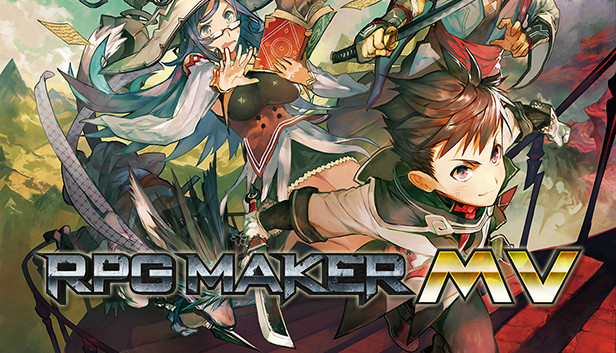
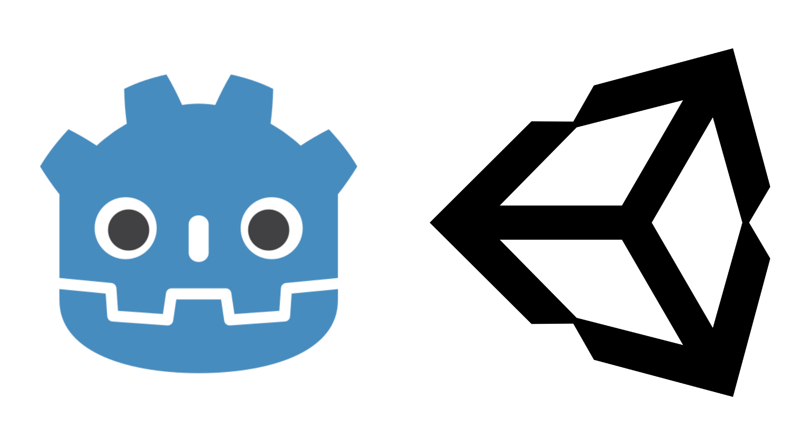
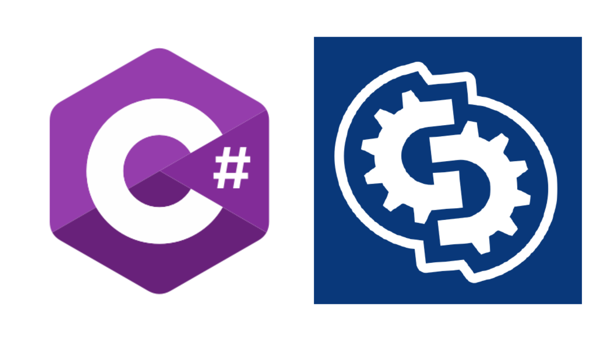
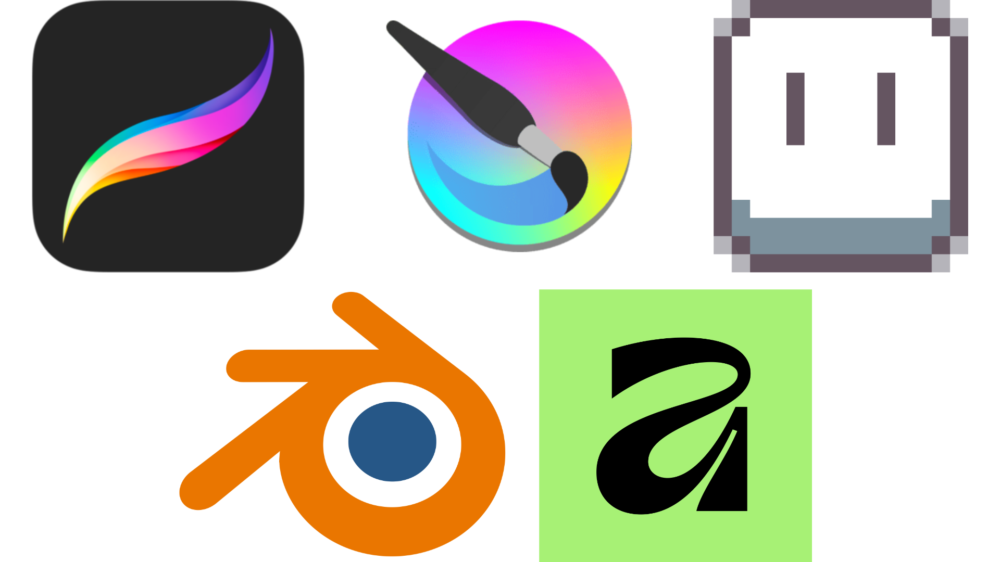
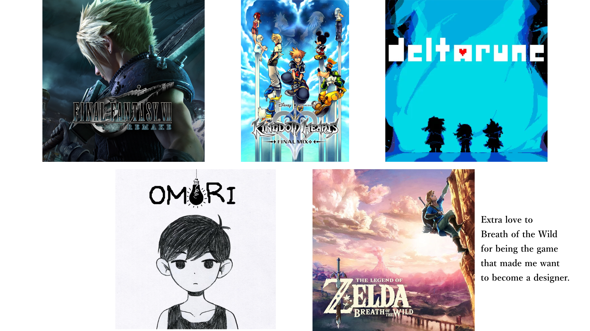
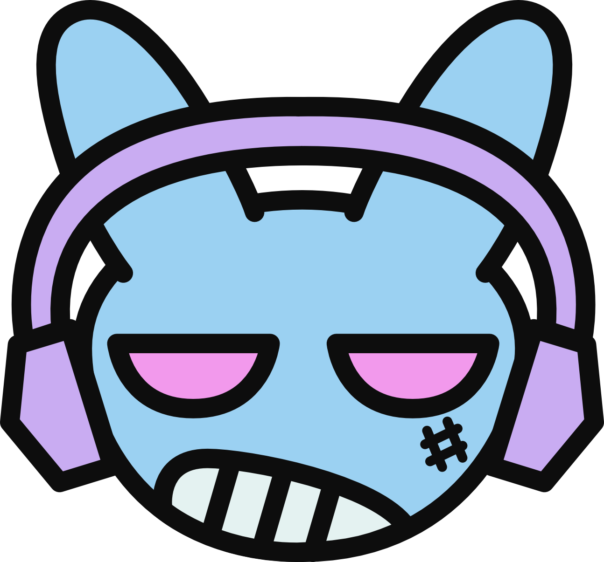

Hi. I'm Denis!
I'm 24 years old. I'm Russian, but I was born in Japan. I lived in the United States, got my bachelor's in game design in The Netherlands, and I'm currently pursuing my master's in digital game development in Portgual.
I love traveling (surprise of the century), my favorite movie is Look Back, my favorite musician is Porter Robinson, I love taking photos of the sky when it's pretty, my favorite video game is The Legend of Zelda: Breath of the Wild, and I can recite Pi to the 120th digit (I was bored in high school).
But most importantly, I'm a game designer.
How it all started
Growing up with a lot of uncertainty and anxiety, I viewed video games as safe havens - worlds that I can escape to, find shelter in, explore, and experience the ethereal. Over time, I became fascinated with how developers made my favorite games, which snowballed into me becoming curious about making my own games. So, in 2018, I began my adventure as a game designer with RPGMaker MV while in high school, making personal projects for fun.

Game Engines
Since 2020, I’ve explored more sophisticated game engines, becoming proficient in Godot and Unity.

Programming
Along with designing games, I've learned to program in C# and GDScript to bring my designs to life.

2D and 3D Art
I've also been exploring art, using a plethora of 2D and 3D tools such as Procreate, Krita, Aseprite, Blender, and Affinity Designer to create visually striking worlds and characters!

Music
Beyond game design, music production is another passion of mine. Using FL Studio, I've been able to create catchy beats that get players hooked!
Games that Inspire Me
Action-adventure games and RPGs are my bread and butter. Some of my favorites include Kingdom Hearts, Deltarune/Undertale, Omori, Final Fantasy, and, last but not least, The Legend of Zelda series. If it weren't for these games, I wouldn't be pursuing game development as a career.

What I'm up to at the moment
Currently, I’m pursuing my master's degree, making small prototypes for university, participating in game jams, and continuing to make small personal projects to learn and further develop my game design skills.
Who's the Bunny?

Meet DQ, my original character and monogram. He represents me and the energy I bring. Expressive, free-spirited, and unapologetically myself.
Why games?
It's because I love to create. I love it more than anything.
I love when an idea pops into my head out of nowhere, and I drop everything I'm doing to pursue it.
I love spending sleepless nights behind a computer screen, turning that idea into a game.
I love getting frustrated when my code inevitably causes an error.
I love finding solutions that fix those errors.
I love learning programming and art skills while I'm making my game.
I love experimenting and toying with my game, wondering how it can be better.
I love watching people playing and connecting with what I've made.
I love hearing someone tell me that I've inspired them to create something of their own.
I love creating games and all the good and the bad that comes with it. It's what gets me out of bed in the morning, it's what drives me during the day, and it's what keeps me up at night. It is truly all I ever see myself doing in this world.